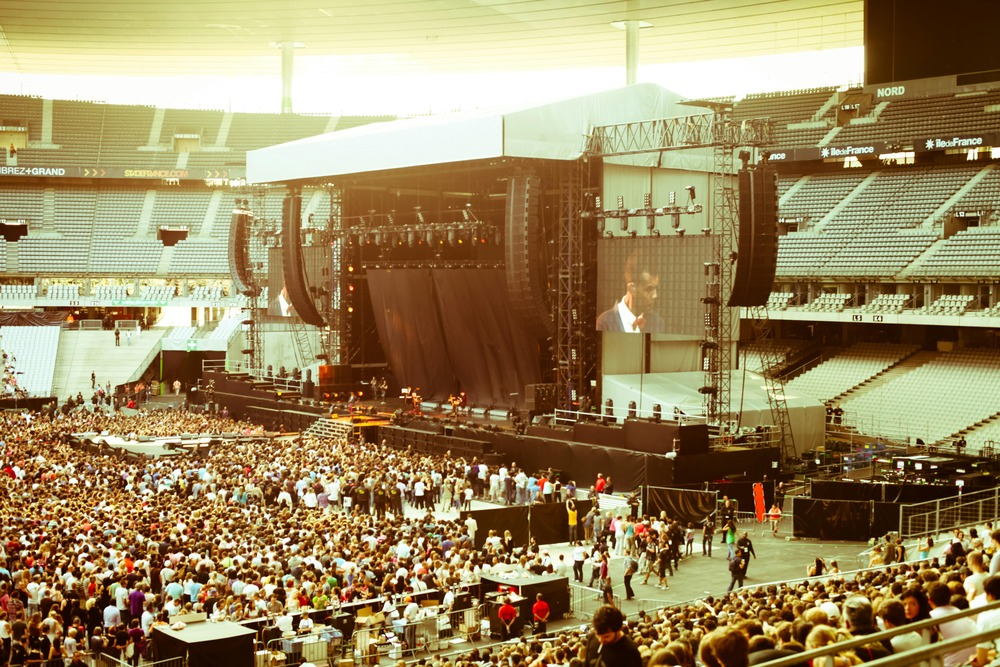

Un simbolo iconico della città di Atlantide
Situato nel cuore della città, questo stadio moderno rappresenta un punto di riferimento per grandi eventi musicali e spettacoli internazionali. Nato come struttura polifunzionale, ha accolto nel corso degli anni artisti di fama mondiale e produzioni di grande richiamo, diventando un vero simbolo dell’intrattenimento urbano.
Progettato secondo rigorosi standard di sicurezza e comfort, l'impianto offre spazi accoglienti, un’acustica ottimizzata e tecnologie all’avanguardia. La sua struttura è caratterizzata da pilastri portanti e una copertura leggera che abbraccia l'intero perimetro, garantendo una visuale perfetta da ogni settore. L’attenzione al design e alla funzionalità lo rende un luogo ideale per concerti, eventi culturali e grandi manifestazioni.
- 200+ Eventi Ospitati
- 300 Posti accessibili
- 150.000+ Biglietti per Evento
